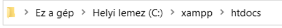

A program indításakor a "Lépj be vagy regisztrálj" feliratú főoldal jelenik meg. Itt letőség van regisztrálni vagy bejelentkezni a "Regisztráció" és a "Belépép" gombra kattintva.
Ha a "Regisztráció" gombra kattintunk a program láthatóvá teszi a regisztrációs adatokat bekérő üres szövegmezőket. Itt meg kell adni egy új fehasználónevet, e-mail címet, jelszót és a jelszót mégegyszer. Ha a jelszó vagy a felhasználónév karaktereinek száma kevesebb mint 5, akkor a program felugró ablakkal jelzi a hibát "A felhasználónévnek minimum 5 karakter hosszúnak kell lennie!" és "A jelszónak minimum 5 karakter hosszúnak kell lennie!" szöveggel. Ha a jelszavak szövege nem egyezik akkor is felugró ablakkal jelzi a hibát "Az egyik jelszót rosszul adtad meg!" szőveggel. Ha már van felhasználói fiókunk és mégsem szeretnénk regisztrálni, akkor az "X" gombra kattintva újra a "Regisztráció" és a "Belépés" lehetőség lép fel. De ha mégis regisztrálni akarna a felhasználó és rákattint a "Regisztráció" gombra a program elmenti a megadott a datokat, létrehozza a felhasználó új fiókját és betölti a program kezelőfelületét.
Ha a "Belépés" gombra kattintunk a program láthatóvá teszi a belépéshez szükséges adatokat bekérő üres szövegmezőket. Itt meg kell adni egy a már létező fehasználónevet és jelszót. Ha a felhasználónév hibásan lett megadva, akkor a program felugró ablakkal jelzi a hibát "Nincs ilyen nevű felhasználó!", ha a jelszó lett rosszul megadva akkor azt is felugró ablakkal jelzi a program "Rossz felhasználónév vagy jelszó!" szöveggel. Ha még nincsen felhasználói fiókunk és szeretnénk regisztrálni, akkor az "X" gombra kattintva újra a "Regisztráció" és a "Belépés" lehetőség lép fel. De ha mégis bejelentkezni akarna a felhasználó és rákattint a "Belépés" gombra a program leellenőrzi az adatokat, és ha minden megfelelő, akkor betölti a program kezelőfelületét.
A "Receptek" gombra kattintva megjelenik az összes recept táblázatba rendezve. A "Recept" gomb felirata "Megnyitás"-ra módosul. Ha kilyelölünk egy sort a táblázatban egy kattintással és kattintunk a "Megnyitás" gombra a táblázat eltűnik és egy teljes receptet meglyelenítő lap a recept nevével, kategóriályával, hozzávaóival és elkészítésének szövegév jelenik meg. Itt lehetőségünk van a receptet elolvasni, a "Recept másolás" gombra kattintva a recept teljes szövegét a vágólapra másolja, így tetszőlegesen felhasználható. Ha a "Kiírás txt-be" gombra kattintunk felugrik egy rendszerablak melyben a file nevét, kiterjesztését(például:txt.) és új helyét megadva új file-ba menthetjük a megnyitott receptet. A "Receptek" gombra kattintva újra az összes receptet jeleníti meg táblázatba rendezve, és a "Megnyitás" gomb felirata "Receptek"-re módosul.
A "Saját receptek" gombra kattintva megjelenik az összes saját recept amit a felhasználó ebben a felhasználó fiókban hozott létre táblázatba rendezve. A "Saját receptek" gomb felirata "Megnyitás"-ra módosul. Ha kilyelölünk egy sort a táblázatban egy kattintással és kattintunk a "Megnyitás" gombra a táblázat eltűnik és egy teljes receptet meglyelenítő lap a recept nevével, kategóriályával, hozzávaóival és elkészítésének szövegével jelenik meg. Itt lehetőségünk van a receptet elolvasni, a "Recept másolás" gombra kattintva a recept teljes szövegét a vágólapra másolja, így tetszőlegesen felhasználható. Ha a "Kiírás txt-be" gombra kattintunk felugrik egy rendszerablak melyben a file nevét, kiterjesztését(például:txt.) és új helyét megadva új file-ba menthetjük a megnyitott receptet. A "Saját receptek" gombra kattintva újra az összes saját receptet jeleníti meg táblázatba rendezve, és a "Megnyitás" gomb felirata "Saját receptek"-re módosul.
A "Kedvencek" gombra kattintva megjelenik az összes kedvencnek jelölt recept táblázatba rendezve. A "Kedvencek" gomb felirata "Megnyitás"-ra módosul. Ha kilyelölünk egy sort a táblázatban egy kattintással és kattintunk a "Megnyitás" gombra a táblázat eltűnik és egy teljes receptet meglyelenítő lap a recept nevével, kategóriályával, hozzávaóival és elkészítésének szövegével jelenik meg. Itt lehetőségünk van a receptet elolvasni, a "Recept másolás" gombra kattintva a recept teljes szövegét a vágólapra másolja, így tetszőlegesen felhasználható. Ha a "Kiírás txt-be" gombra kattintunk felugrik egy rendszerablak melyben a file nevét, kiterjesztését(például:txt.) és új helyét megadva új file-ba menthetjük a megnyitott receptet. A "Kedvencek" gombra kattintva újra az összes kedvenc receptet jeleníti meg táblázatba rendezve, és a "Megnyitás" gomb felirata "Kedvencek"-re módosul.
A "Új recept" gombra kattintva megjelenik a receptmegjelenítő lap, melyen üres szövegmezők a recept nevét, karakterét, hozzávalóit és elkészítésének a szövegét kérik be. Minden mezőt kötelező kitölteni. Ha egy már létező recept nevét irjuk az új recept nevéhez, akkor felugró ablak "Már van ilyen recept!", ha legalább egy mező üres maradt a program felugró ablakban hibaüzenetet küld "Kihagytál egy mezőt!" szöveggel. Ha mégsem akarsz új receptet hozzáadni, akkor a "Vissza" gombra kattintva visszalép a receptek táblázathoz. Ha a "Hozzáad"gombra kattintunk a gomb feliratát visszaváltoztatja "Új recept"-re. És kilép a receptek táblázathoz.
A "Módosít" gombra kattintva ha ki van valamelyik táblázatból jelölve egy recept a gomb feliratát "Szerkesztés"-re változtatja, a receptmegjelenítő lapon a recept szövegével már feltöltött bekérő mezőkben lehetőség van a recept szövegét átírni és a receptet kedvencként be vagy ki pipálni. A "Szerkesztés" gombra kattintva a gomb feliratát visszaváltoztatja "Módosít"-ra, a receept módosítását elvégzi a program.
A "Törlés" gombra kattintva ha ki van valamelyik táblázatból jelölve egy recept de a receptet nem ebben a felhasználói fiókban hozták létre, akkor felugró ablak hibaüzenetet kült "Más felhasználó receptjeit nem törölheted!", ha a recept ebben a felhasználói fiókban lett létrehozva, akkor megkérdezi egy felugró ablak, hogy"Biztosan törölni szeretnéd ezt a receptet?". Az "igen" gombra kattintáskor a receptet törli véglegesen, a "nem" gombra kattintva nem csinál semmit a program.
A kereső mezőben a "Receptek" a "Saját receptek" vagy a "Kedvencek" gomb megnyomása után a recepte nevéve, de a nevük részletével(például: almás pite=almás vagy pites,stb) keresni. Betűlenyomásra autómatikusan keres. A "Keresés törlése" gombon kattintva azonnal tötlődik a keresés és a keresés mező.
A "Profil" gombon kattintva a gomb felirata "Vissza"-ra változik, egy adatkiíró lapon a lap tetején a felhasználó adatait a felhasználónevet és az e-mail címet írja ki. A "Fiók törlése" gombra kattintva felugró ablakban megkérdezi, hogy"Biztosan törölni szeretnéd a fiókodat?", a "nem" gombra kattintva vagy a felugró ablak felső sarkában az X re kattintva nem történik semmi, az "igen" gombra kattintva törli a felhasználó fiókját és kiléptet a "Lépj be vagy regisztrálj" feliratú főoldalra. A lap alján a felhasználónevet a jelszót és az e-mail címet lehet megváltoztatni a szövegbeviteli mezőkbe írva a az új értékeket. Külön módosíthatók a "Frissít gombra kattintva. Ha 5 karakternél rövidebb a jelszó vagy a fehasználónév, akkor felugró ablakban "A felhasználónévnek/jelszónak legalább 5 karakter hosszúnak kell lennie!", ha sikerül a változtatás felugró ablakban értesít "A felhasználónév/jelszó/e-mail cím sikeresen megváltozott". A "Vissza" gombra kattintva ujra használhatóvá válik a kezelőfelület és a gomb szövege visszaváltozik "Profil"-ra.
A felhasználó neve a "Profil" gomb melletti szürke sávban olvasható. A "Kilépés" gombra kattintva a program kilép a receptek kezelőfelületéről "Lépj be vagy regisztrálj" feliratú főoldalra, ahonnan újra be lehet lépni vagy lehet új felhasználói fiókot létrehozni.
A program telepítése
A program nem rendelkezik külön telepítő programmal, ezért manuálisak kell a számító-gépre másolni a
szükséges fájlokat. A program használatához szükséges fájlokat, a „Telepí-tő” mappa tartalmát helyezzük
el a számítógépen tetszőleges helyre. A mappából az XAMP adatbáziskezelő szoftver telepítőjével vagy
internetről beszerezve hajtsuk végre az adatbázis kezelő telepítését. Kattintsunk az „Admin” gombra, a
felugró weboldalon lépjünk be a „root” felhasználónévvel. Majd belépés után kattintsunk az importálásra
és válasszuk ki a „telepítő mappából a receptkonyv.sql fáljt és indítsuk el az importálást. Majd a
„sugo” map-pát fel kell másolni a C: meghajtóra az xampp mappán belül a htdocs mappába.
Majd a mappából az XAMP adatbáziskezelő szoftver Control Panel felületén az Apache és a MySQL motult
szükséges elindítani a felső két Start gomb lenyomásával a számítógép minden elindításakor (1. ábra).
Ezután a „receptkönyv” fájlra kattintva indul a program.
